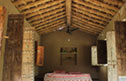

Trip Overview
Far from the chaos of Indian cities, India Untravelled invites you to immerse yourself in Rajasthan’s folk and farm culture on a working organic farm near Jaipur. Hosted by Maliram-ji, a local farmer, and his wife, Manju didi, you’ll experience the simple joys of village life on the Indian countryside.
Embark on a unique 7 day experience, during which you’ll participate in organic farming activities, try your hand at traditional Indian cooking, relax in the open air freshwater pool, watch colorful migratory birds from the comfort of a khatiya (traditional woven bed) in the courtyard, get to know the local farmers and their traditions, and experience life in rural Rajasthan.
Staying in traditional thatched-roof huts on the farm, you can indulge your tastebuds in delicious Rajasthani cuisine prepared with fresh vegetables and herbs grown on the same farm! On cool winter nights, gather with your hosts around a bonfire under the stars, listen to captivating tales of local legends, and dance to folk tunes from the region.
This is an India that only a lucky few get to experience and embrace, and we hope you’ll be one of them!
Please email us at untravel@indiauntravelled.com to plan and book your travels.
Trip Highlights
Traditional outdoor cooking : Assist in cooking farm produce using an open-air chulha and get familiar with local spices and cooking techniques.
Getting your hands dirty on the farm: Milk the cows, feed the goats, and help in sowing, harvesting and cutting crops.
Exploring the surrounding farms: Leave behind everything but your camera and navigational sense, and set off on a little walking expedition of your own.
Catching up with yourself: Here’s the opportunity to do your reading, writing, painting, photography, and anything else you were always waiting to find time to do.
Something new: Try out a session of early morning yoga and learn how to wear Rajasthani turbans (men) or saris (women). It’s not all that easy :)
The best part? You have the last three days to do exactly what you liked best, even if it’s doing nothing!
Please email us at untravel@indiauntravelled.com to plan and book your travels.
Brief Itinerary
Day 01 – Arrive at the farm and settle in.
Traverse the narrow by-lanes of Rajasthan’s countryside in an auto (tuk-tuk), to arrive at your abode, on a working organic farm near Jaipur. Meet your hosts, settle down in your hut, have a cup of chai, shower in a spacious bathroom with fibre roofs that replicate open rooftop bathing, and get acquainted with the farm on a short farm tour.
Day 02 – From farm to table.
Join your hosts on a stroll through the farm during which you’ll learn more about life on the farm, the crops and their seasons, and local farming practices. In the afternoon, bring the farm produce to your table with your first lesson in traditional Indian cooking. Assist your hostess as she introduces you to the local spices and herbs, and the ways of the Rajasthani kitchen. You can choose to eat in the outdoors or cross-legged on the floor of the chaupal, a large indoor space, in traditional village style. Post lunch, ladies can choose to paint their hands, arms and feet with mehendi, a traditional Indian practice applied in beautiful intricate designs, similar to a temporary tattoo.
Day 03 – A day in the life of a Rajasthani farmer
Get an early start today, and watch the sun rise over the nearby farms of mustard and jo. Then assist your hosts in their daily chores on the farm. Take a sneak peek into how natural compost is prepared for organic farming. Under the warm afternoon sun, take a dip in the in-house pool, kept chlorine free with natural water-cleaning techniques, or lie on the khatiya in the courtyard, spotting birds. Before or just after lunch, go for a guided walk in the nearby village to get a glimpse of the local lifestyle. Visit the village temple and school. Revisit your cooking lesson at night, or gather around a bonfire under the stars.
Day 04 – When was the last time you tried something new?
Start the day early with a Yoga lesson in the midst of the farm’s greenery. Yoga is a physical, mental and often spiritual practice that originated in ancient India. In the afternoon, immerse further in Indian living, with a lesson on how to tie the Indian sari (for women) and the Rajasthani turban (for men). It could take several rounds of practice before you perfect the art, and it could be fun to see how your methods evolve!
Days 5, 6, 7 – Live like the locals
You’re all set to do all that you liked best and get better at it! Spend the rest of the days at the farm perfecting your farming habits, practicing Indian cooking and traditional games like gulli danda, getting to know your hosts better, taking dips in the swimming pool, bird watching, reading, writing, painting, drawing, singing, dancing, stargazing… you’re living like the locals now :)
Please email us at untravel@indiauntravelled.com to plan and book your travels.
Costs on request
Twin sharing: INR 11,000 per person
Solo traveller: INR 15,250 per person
Includes:
- Pick-up from and drop to Jaipur railway station by auto (tuk tuk)
- Accommodation in a thatched-roof hut on twin-sharing, for 7 days and 6 nights
- All meals for 7 days, morning and evening tea, occasional snacks
- Farm tour, farm activities and 1 bonfire night
- Guided walk to the village, including the village temple and school
- Traditional Indian games like Gulli danda and hopscotch
- *Lessons on sari tying OR turban tying (1 hour)
- *Lesson on Indian / Rajasthani cooking (2 hours)
- *1 Yoga lesson (2 hours)
- *1 Mehendi session (1 hour)
Optional:
**Please inform us at the time of booking if you would like to avail of any of the optional activities, as these need to be arranged in advance:
- Camel Ride: INR 1,000
- Bullock Cart Ride: INR 750
- Day trip to Jaipur: INR 3,000
- Day trip to nearby temples: INR 1,200
- Kite flying (including materials): INR 1,400
- A night of folk music, qawallis and traditional dancing: INR 5,000
Excludes:
- Mineral water and beverages (other than those provided)
- Tips, shopping and personal expenses
- Travel insurance
- Expenses arising out of unforeseen circumstances
*Note: These activities are available only for a group of 4 or more
**Note: These costs will be lower for a bigger group.
Please email us at untravel@indiauntravelled.com to plan and book your travels.
Location
Please email us at untravel@indiauntravelled.com to plan and book your travels.
The Farm
- Entrance to the huts
- Chulha cooking on the farm
- Huts on the farm
- Interiors of the huts on the farm
- Exterior of the traditional thatched roof cottage
- Chulha cooking on the farm
 Farm oasis for birdwatching
Farm oasis for birdwatching- Fibre roof bathrooms with a view
- Freshwater swimming pool
- Hosts, Maliram-ji and Manjoo didi at the farm
- Lush greenery on the farm (taken in summer!)
 Owners of the farm, Mr and Mrs Modi
Owners of the farm, Mr and Mrs Modi Relaxing courtyard
Relaxing courtyard- Seating area outside the cottage
- Simple spacious interiors of the cottage


Activities
- Listen to folk tales over night cooking and bonfires
 Bonfire and folk tales
Bonfire and folk tales- Indian cooking lesson by night
- Lunch in the Chaupal, in traditional Rajasthani style.
- Simple joys of village life on the farm
- Cut, sow and harvest the farm crops
- Feeding the resident goats
- Get to know farmers in the nearby villages
- Go on long walks along the surrounding farms
- Milk-the-resident-cows-in-the-early-morning
- Participate in the daily chores of the farm
- Play _Stapu_, a traditional Indian game on the farm
- See the seasons transform the neighboring farms

{kind=link}
{kind=link}
{kind=link}
{kind=link}
{kind=link}
{kind=link}
{kind=link}
{kind=link}
{kind=link}
{kind=link}
{kind=link}
{kind=link}
{kind=link}
{kind=link}
{kind=link}
{kind=link}
{kind=link}
{kind=link}
{kind=link}
{kind=link}
{kind=link}
{kind=link}
{kind=link}
Please email us at untravel@indiauntravelled.com to plan and book your travels.
Reviews
To feature your reviews about this trip, please email them to untravel@indiauntravelled.com
Please email us at untravel@indiauntravelled.com to plan and book your travels.
Responsible Travel
In 2004, Mr Arvind Modi bought a piece of barren farmland 22 km away from Jaipur. The neighboring farming settlements were only growing cash crops on their fields for commercial reasons, and the ecology of the region was suffering due to a lack of trees that would grow and flower seasonally, but never leave the land barren. Mr Modi began to plant trees of lesva, drumsticks and bel, among others, and using organic farming techniques, revived the barren soil and managed to save the trees from the Rajasthan summer, when temperatures rise as high as 43 degrees Celsius.
Changes in the weather were gradually felt, and today it is possible to lounge in a shaded area of the farm even in the summer, with the trees swaying in the cool breeze. Nirvana Organic Farm soon became a place where farmers from the nearby villages could learn about organic farming and traditional Indian agricultural practices.
Tips on how to travel responsibly on this trip:
- Pack your bags with environmentally friendly things. Carry as little plastic as possible.
- Do not leave behind any non-biodegradable waste. Carry batteries and other toxic waste back to the cities where waste management is in place.
- What you wear has an impact – environmentally and culturally – dress ethically and appropriately.
- Respect the local culture and refrain from physical intimacy in public places.
- Carry a good water bottle. Pure water dug from the earth is available at the farm for re-filling your bottles, and boiled water can be provided on request. Refrain from buying numerous plastic mineral water bottles.
- Local food is great. Try it as much as possible and avoid packaged food. Ask for modifications in the food according to your taste, instead of wasting it.
- Avoid excessive consumption of alcohol and refrain from drugs, especially in public places.
- Seek permission before photographing people, so their privacy is respected.
- Do not pluck any medicinal plants & flowers, and do not disturb the wildlife.
Please email us at untravel@indiauntravelled.com to plan and book your travels.
Please email us at untravel@indiauntravelled.com to plan and book your travels.